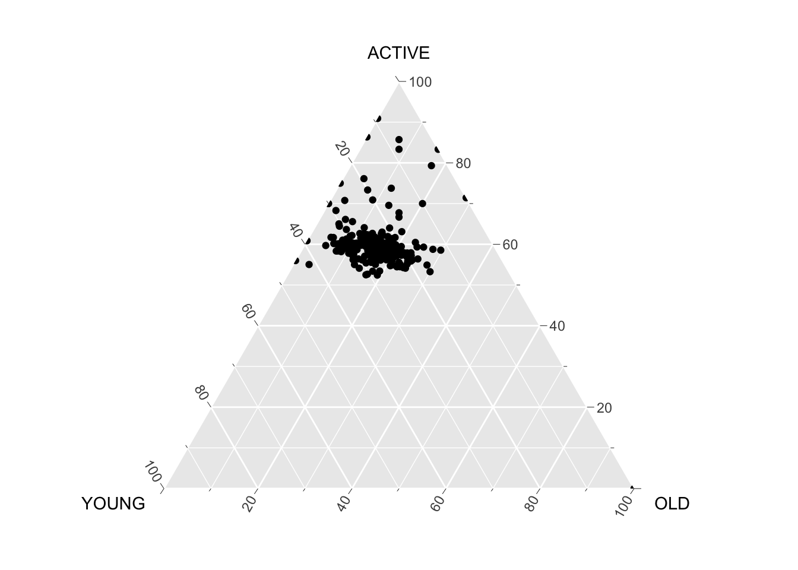
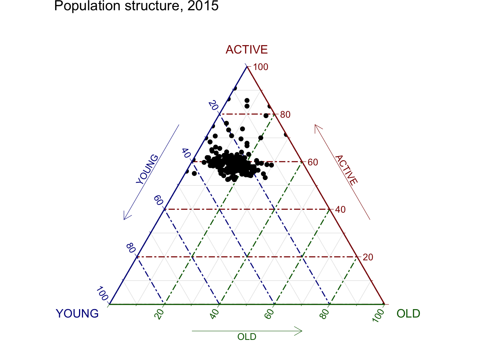

pacman::p_load(plotly, ggtern, tidyverse)Hands-on Exercise 5A
Creating Ternary Plot with R
A ternary diagram is a specialized triangular graph used to visualize the relationship between three variables. Unlike standard bar or line charts, this plot is shaped like an equilateral triangle where each side is scaled from 0 to 1.
In business analytics, we use ternary diagrams to map out compositional data. It has a wide range of applications.For example,in operational cost analysis,we can use ternary diagrams to analyze the efficiency of different business units by plotting Labor, Materials, and Overhead costs.
1. Installing and launching R packages
In this chapter,2 R packages are used : ggternand Plotly R:
2. Data Preparation
For the purpose of this hands-on exercise, the Singapore Residents by Planning AreaSubzone, Age Group, Sex and Type of Dwelling, June 2000-2018 data will be used.
pop_data <- read_csv("data/respopagsex2000to2018_tidy.csv") Next, use the mutate() function of dplyr package to derive three new measures, namely: young, active, and old.
3. Plotting Ternary Diagram with R
This ternary plot visualizes the population structure of different planning areas in Singapore for the year 2015. Each black dot on the chart represents a specific neighborhood or district.
By using three axes, we can see the balance between three age groups at once:
ACTIVE: The top vertex represents the workforce (ages 20–64).
YOUNG: The bottom-left vertex represents children and youths (ages 0–19).
OLD: The bottom-right vertex represents seniors (ages 65 and above).
ggtern(data=agpop_mutated,aes(x=YOUNG,y=ACTIVE, z=OLD)) +
geom_point()
The current plot is quite basic. We can enhance it by adding colors and icons to make our insights clearer and more impactful.
ggtern(data=agpop_mutated, aes(x=YOUNG,y=ACTIVE, z=OLD)) +
geom_point() +
labs(title="Population structure, 2015") +
theme_rgbw()
The static plot makes it difficult to identify specific values, which limits our ability to draw meaningful conclusions. To solve this, we need an interactive ternary plot.
label <- function(txt) {
list(
text = txt,
x = 0.1, y = 1,
ax = 0, ay = 0,
xref = "paper", yref = "paper",
align = "center",
font = list(family = "serif", size = 15, color = "white"),
bgcolor = "#b3b3b3", bordercolor = "black", borderwidth = 2
)
}
axis <- function(txt) {
list(
title = txt, tickformat = ".0%", tickfont = list(size = 10)
)
}
ternaryAxes <- list(
aaxis = axis("Young"),
baxis = axis("Active"),
caxis = axis("Old")
)
plot_ly(
agpop_mutated,
a = ~YOUNG,
b = ~ACTIVE,
c = ~OLD,
color = I("black"),
type = "scatterternary"
) %>%
layout(
annotations = label("Ternary Markers"),
ternary = ternaryAxes
)